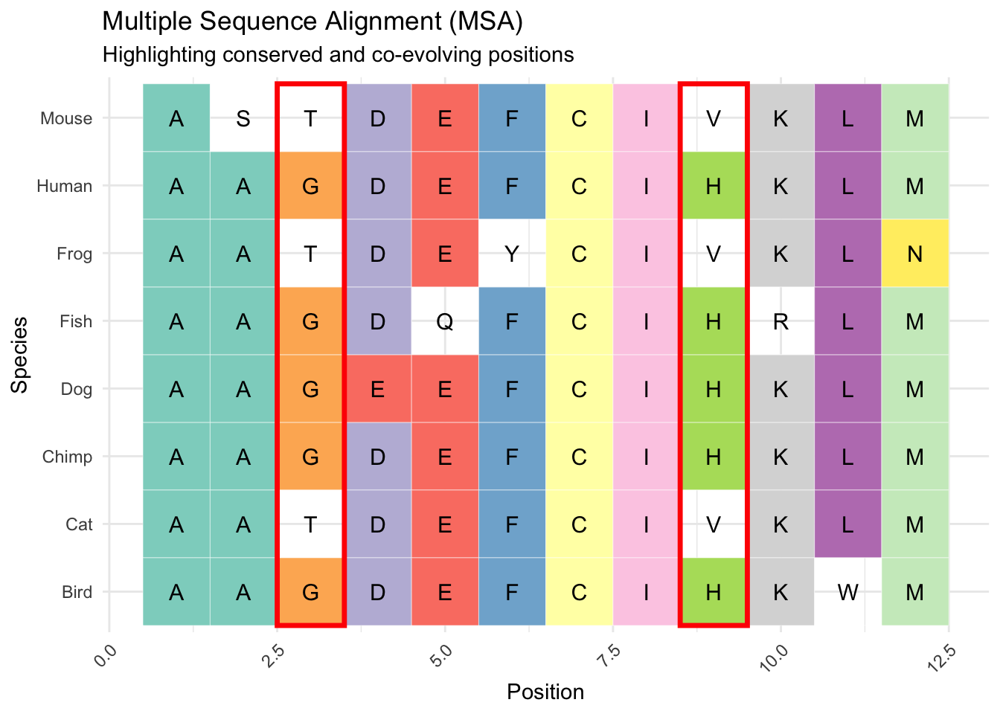
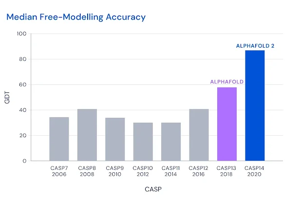

8 Proteins: from sequence to structure
Proteins are the fundamental building blocks of biological systems, and understanding their structure is crucial for deciphering their function. The journey from a one-dimensional (1D) amino acid sequence to a two-dimensional (2D) contact map/distance map and finally to a three-dimensional (3D) structure has been one of the grand challenges in computational biology. In this chapter, we explore how protein models based on attention/transformer-like modules, like AlphaFold and ESMfold(2)(Lin et al. 2023), revolutionized this space. Though we should not from the start, that models which are aware of multiple sequences alignment (MSA) during training, that are supervised to understand evolutionary constraint (i.e learn what can and cannot easily change in a protein) are VERY hard to beat for pure Protein language Models. Those MSA aware models, specifically Alphafold and Alphafold2(Jumper et al. 2021) won their developers a Nobel Price in medicine. Befoe you dive into these chapters on protein models, its worth watching this vertasium video titled “The most useful thing AI has ever done” as a way of easing into the topic. one elephant in the room is that protein language models, which do not rely on MSA, have struggled greatly to beat much smaller protein models that directly incorporate MSA, so always evaluate the pro’s/con’s of different architectures for your specific research questions & needs!
8.1 Traditional Approaches to Protein Structure Prediction
Before the advent of language models and sophisticated deep learning architectures, protein structure prediction relied heavily on physics-based models and evolutionary information encoded in multiple sequence alignments (MSAs). Homology modeling, one of the earliest techniques, used the structures of similar, evolutionarily related proteins to infer the structure of a target protein. Threading methods aligned sequences against known structures to find the best possible fold. Ab initio modeling, in contrast, attempted to predict protein structure from first principles, using physical energy functions to simulate the folding process. These methods often struggled with accuracy and required extensive computational resources, making them impractical for many real-world applications.
8.2 The critical breakthrough: AlphaFold
MSA-based models, like those used in the early iterations of AlphaFold and Rosetta, made significant strides by leveraging evolutionary couplings between residues. These statistical relationships, inferred from aligned sequences across species, provided powerful constraints on the possible 3D structures. Coupling information was used to construct 2D contact maps — matrices indicating which amino acid pairs were likely to be spatially close in the folded protein.

AlphaFold(Senior et al. 2020) in CASP13, and AlphaFold 2(Jumper et al. 2021) in CASP 14 were revolutionary. The GDT scores, which are the percentage of atoms within 1, 2, or 8 angstroms (\(10^{-10}\) m) of the directly measured protein structure, reached ±90, meaning 90% of the atoms in the prediction were extremely close to the measured protein. The score was referred to as “near experimental accuracy,” though that claim made in the Nature paper was unreferenced. I would love a table with an empirical estimate of the experimental accuracy (from repeated independent measurements of the protein, for example) and the AF2 predictions’ GDT/RMSD side by side (I have not been able to find anything like it, could be my inexperience with the particular field!).
8.2.1 Good old MSA
In our chapters on DNA language models, we came across GPN-MSA (Benegas et al. 2023), which relied on multiple sequence alignment (MSA) between species. We even trained a model that was a lot like it in Chapter 4! As you’ll recall, the model did amazing, but mostly I feel because while masking, we only masked the human base and let the model use all ancestral bases during prediction. The multiple sequence alignments play a big role in the recent success in protein folding.
The logic being that if two amino acids “correlate” or co-occur across species, like column 3 and 9 highlighted in red in Figure 2, that indicates their co-evolution. Their co-evolution at distance is then viewed as an indicator of their physical proximity in the 3D molecule. In the toy example, we only observe G and H OR T and V in positions 3 and 9, which means there is likely a fitness penalty against other combinations. If these co-evolution signals are robust (reliably found across many aligned sequences) and at a distance, they likely reflect that the two amino acids are physically close, and the substitution of one has an effect on the binding/function of the other.
8.3 The Leap to Protein Language Models
The success of AlphaFold 2 marked a watershed moment for protein structure prediction. By integrating attention-based neural networks and using MSAs to predict 3D structures directly from sequence information, AF2 achieved unprecedented accuracy. Yet, the reliance on MSAs introduced limitations — the need for evolutionary data and the computational cost of alignment. It even appears that as the datasets, and the models grow explicitly conditioning on MSA becomes less important. AlphaFold3 for example already reduces the importance of MSA related information in the model. that being said, Alphafold2 is a < 100 million parameter model and it handily beats Protein language models ten to twenty times it size at times!
Protein language models (PLMs) now slowly emerge as an alternative that is way cheaer to run, and doesnt require MSA allignment. By pretraining on vast protein databases, PLMs capture contextual information about amino acids and their interactions without needing MSAs. Models like ESM (Evolutionary Scale Modeling)(Rives et al. 2021), ESM2(Lin et al. 2023) and ProtTrans(Elnaggar et al. 2022) demonstrated the potential of PLMs to predict secondary and tertiary structures directly from sequence data. By encoding the relationships between residues through attention mechanisms, these models implicitly learn structural and functional properties, generating accurate 2D contact maps and even 3D coordinates in some cases.
Protein language models are frequently augmented with geometric neural networks or other additional model “adapters” when used for protein structure prediction. These augmentations ensure the 1D sequences, 2D contact maps, and 3D protein shapes that follow adhere to basic geometric rules. A language model or another sequence model isn’t inherently aware of 3D space. So while we’ll experiment with the latent 2D representations (distances between amino acids) that are implicitly hiding in language models, those representations are noisy and might imply 3D structures that cannot exist (e.g., the distance between a and b, and b and c, might not be consistent with the distance between b and c, etc.). Adding specific neural networks that are designed to produce results that can exist in Euclidean (3D) space greatly improves protein structure prediction. More recent experimentation has linked protein language models directly to diffusion image models to predict protein structure in 3D space with minimal supervision.
8.3.1 Protein language models as biologically tokenized DNA language models
We previously considered DNA language models at nucleotide level, and discussed in Chapter 2 how tokenization is a key step in designing any language model. A protein language model tokenized at amino-acid model is like a naturally tokenized DNA language model, at least for human coding sequences within the DNA. Its important to realize that while DNA coding sequences faithfully translated to amino-acid sequences, amino-acids cannot be perfectly translated back to DNA sequences given multiple triplet DNA/RNA codon sequences (e.g. GAC and GAU) code for the same amino-acid (in this case Asp). That being said, t a later point in this book (Chapter to be written) we’ll consider “multi-modal” models that can represent an input sequence as DNA, RNA or amino-acids with allowances for the asymmetry of the translation.
8.4 Step by Step: 1D Sequences to 3D Structures
The process of moving from a linear amino acid sequence to a folded protein structure involves multiple steps, and in the following chapters, we’ll trace those steps:
Data sources: As always, science begins with good data. In Chapter 8, we’ll talk about data sources for protein (language) models.
1D Sequence Representation: The raw sequence of amino acids, analogous to a string of text in natural language. In Chapter 9, we’ll train a protein language model. Since we can’t compete with the likes of Google DeepMind and Facebook, or even startups, and I want it to be feasible for you to run all of the steps at home, we’ll train a small language model on an ad-hoc selection of G-protein coupled receptor (GPCR) (like/related) proteins across hundreds of species. This large protein family (4% of human protein-coding genome, for example) shares evolutionary origins and therefore is probably a ripe target for a small model with limited training budget.
2D Contact Map Prediction: For any protein, you can conceive a matrix representation showing which pairs of residues are likely to be spatially close, providing key insights into the folding topology. In Chapter 10, we’ll discuss ways in which protein language models (latently!) actually already learn the 2D contact map for each protein, and we’ll extract these from the protein model we trained and compare them to the true contact map for a few proteins. because we’ll dig into the internals of a language model we’ll also have to study self-attention, the core “correlational” mechanism in a language model in this chapter.
3D Structure Construction: In Chapter 11, we’ll look at a few different ways in which we can train models that output a full 3D protein by post-processing the 2D information learned in protein language models. We’ll conceive of 2D structures as images, and 3D structures as simply 3D representations. Deep-learning models for image data have advanced incredibly, and those lessons have been applied to proteins structure modeling. One highly successful guided image modeling technique is guided-diffusion, a model where trough adding noise to images in 1000s of small steps, and then training a model to denoise the image one step at a time people have been able to train “generative” models. These models can be augmented with textual (or other) context, so while denoising a golden retriever with a funny hat, the model is provided the embedding, or reduction of the text “Golden retriever with a funny hat”. Alphafold3(Abramson et al. 2024), one of the most performant models to date, is essentially a protein language model (slightly augmented with MSA information) where the final information form the language model is used to guide a diffusion model. Because Alphafold3 is a fairly complex model, we’ll take a stab at training something slightly more abstracted. We;’ll use our own protein model (or
facebook/esm2_t33_650M_UR50D) to produce embedding, and by using cross attention between the language model embedding, and the diffusion image model matrices “guide” the construction of 2D contact maps from noise using fairly standard image modeling techniques(Saharia et al. 2022). Finally, we’ll have code to do the same for 3D protein structure, though training that model will likely exceed the computational facilities I or either of you can easily access. in Chapter 12 we expand our toy model abstraction of AF3, by conditioning the diffusion model on both 1D sequence embeddings and 2D attention maps.
8.5 Weird and wonderful protein model variants
On the back of the success of Alphfold have come some truly creative models.
Amino-acids to structure and then back to tokens: In Chapter 13, we’ll discuss an interesting class of models that actually mimic nature in a weird way, these models take molecules as input, and condense those into categorical tokens, not amino-acid, but learned tokens trained to represent a hyper efficient geometric alphabet. Foldseek (Kempen et al. 2023) and models like it(Gao, Tan, and Li 2024) take a 3D structure, and encode that into categorical tokens, at the same resolution of the amino acids. Then at each base we know amino-acid, its location in 3D space, and a new token that compresses that location in space. This technique, the first of which was known as might sound a little redundant but it gets at an important issue: many very different proteins, in terms of structure, might fold in similar ways, and even serve similar or the same biological function! Furthermore having encoded structure into tokens allows for ultra fast structure similarity search (orders of magnitudes faster then search based on the full 3d molecule). One of the exciting applications these models might have is to train GPT like models on these spatial tokens in order to generate candidate proteins which are likely to fold into a specific shape(Gaujac et al. 2024).